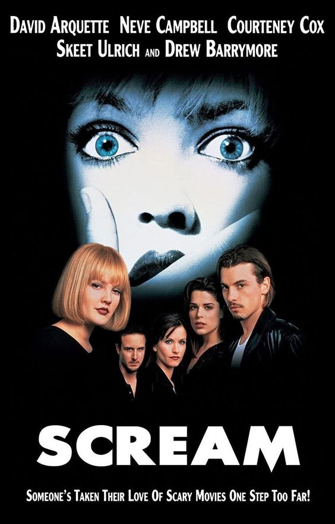
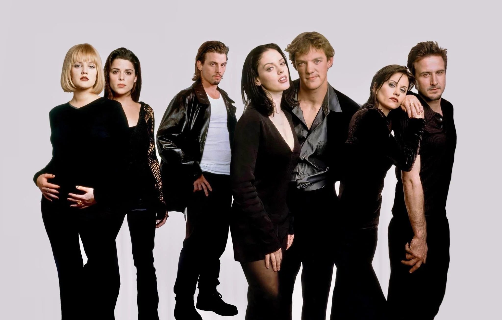
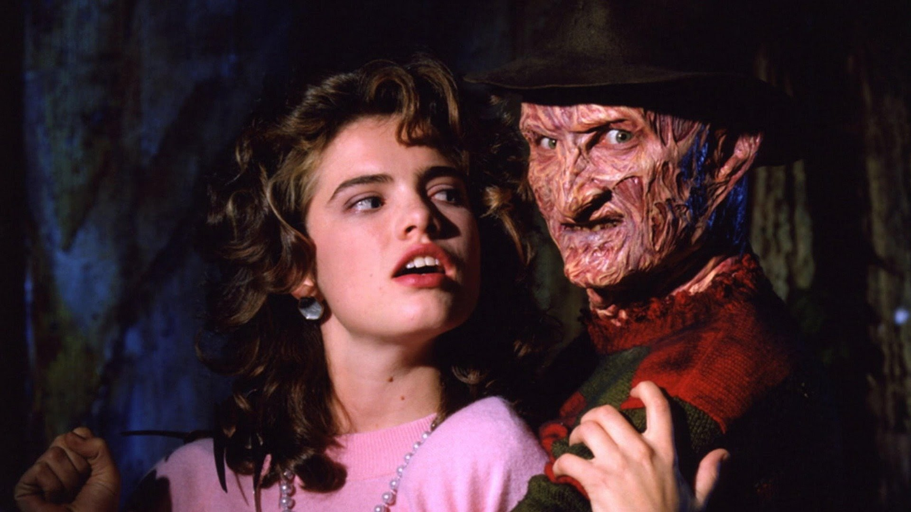
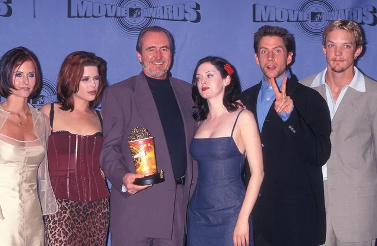
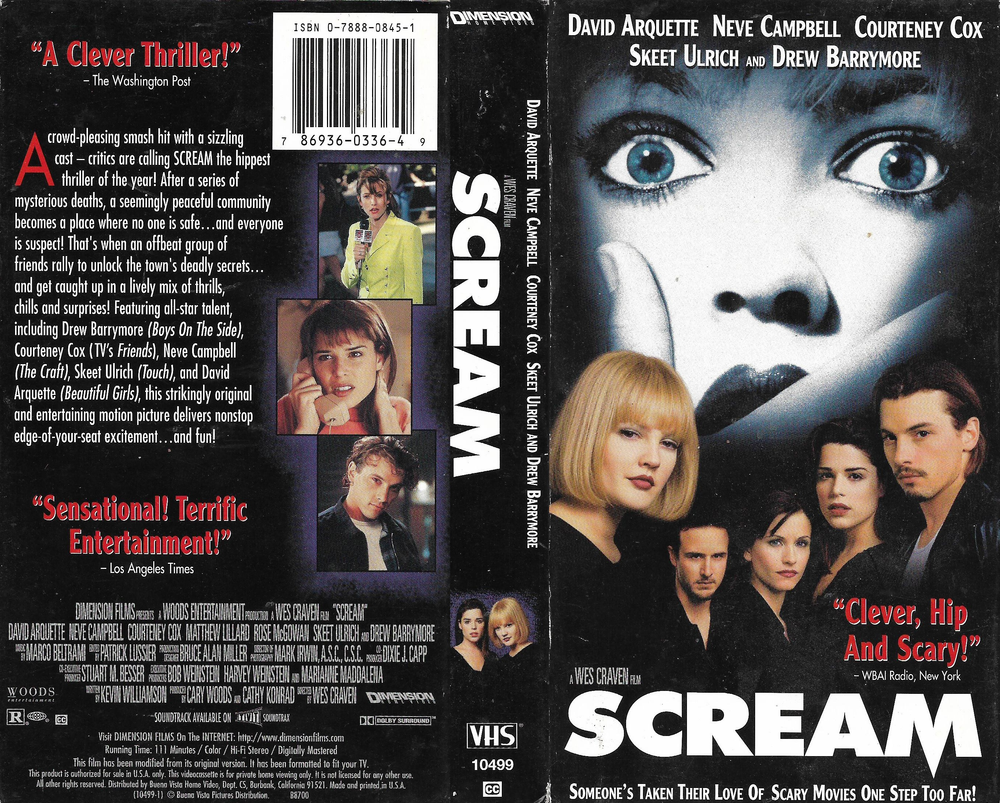
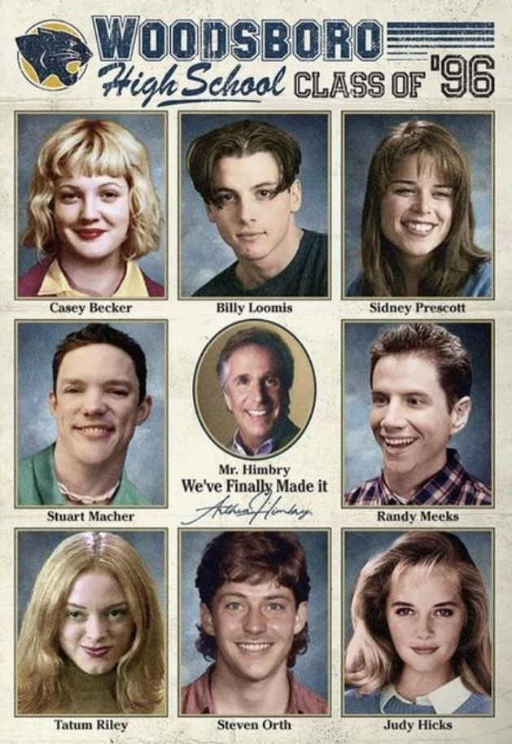

.png)
Forget The Spellmans, How Well Do You Know Salem From "Sabrina The Teenage Witch"?

1. What is Salem's last name?
Bakay
Spellman
He doesn't have one
Saberhaghan
2. True or false: Salem's voice actor is never physically seen on screen
True
False
How did Salem come to live with the Spellman family?
They adopted him
He came with the house
He's renting from them
He was sent to live with hilda as punishement
About scream
.gif)
Scream (originally titled "Scary Movie") is a 1996 horror film directed by Wes Craven and written by Kevin Williamson. The film revitalized the slasher film genre in the mid 1990s, similar to the impact Halloween (1978) had on horror in the late 70s and 80s
It upswept the standard concept with a tongue-in-cheek approach that combined straightforward scares with dialogue, putting a satirical approach to slasher film conventions. The film features many teen idols of the time, including Neve Campbell, Rose McGowan, Skeet Ulrich, Matthew Lillard, Drew Barrymore, David Arquette, Jamie Kennedy and Courteney Cox.
References to other horror films
The film features numerous in-jokes and references to other horror projects. The victims in Scream are quite self-aware: they each make clear their familiarity with, and poke fun at, teen slasher and horror flicks, which sets up their fairly ironic responses to the film's situations. Two of the most common references are to A Nightmare on Elm Street and its director Wes Craven. In the audio commentary for the DVD, Craven says that he almost took out the line where Casey Becker says the first A Nightmare on Elm Street was good but the rest sucked, because he thought it would make him seem egotistical.
About Scream
Box office performance :
The film opened in 1,413 theaters, taking $6,354,586 in its opening weekend. The film made almost 87 million dollars in its initial release, and was then re-released to theatres on April 11, 1997 and went on to make another 16 million, making total a domestic gross of $103,046,663, with, as of 2007, a worldwide lifetime gross of $173,046,663. It peaked at number 3 in the U.S. domestic box office. The film's success made it the highest grossing slasher movie as of 2009.

VHS and DVD releases
The original, gorier version of the film was released on VHS in 1997. The box covers classified the film as rated "R" even though it was actually the unrated version. The unrated cut was only available on video when the film was released for sale to the general public while the rental version, released earlier that year, still contained the theatrical cut. The unrated version was officially released as "The Director's Cut" on laser disc but has yet to be released on DVD in America. The unrated version has been released on DVD in other regions such as Europe and Japan with quality varying.
Differences in the film include: A shot of Steve's entrails falling out of his stomach; a longer, slower version of the shot where Casey's body is shown hanging from a tree; Tatum's head getting crushed by the garage door; More blood can be seen pouring down Kenny's chest after getting his throat slashed; A more graphic version of the scene where Stu and Billy stab each other.
Cast


Sidney Prescott
Gale Weathers
Dwight "Dewey" Riley
Billy Loomis
Randy Meeks
casey becker

Stuart "Stu" Macher
.webp)